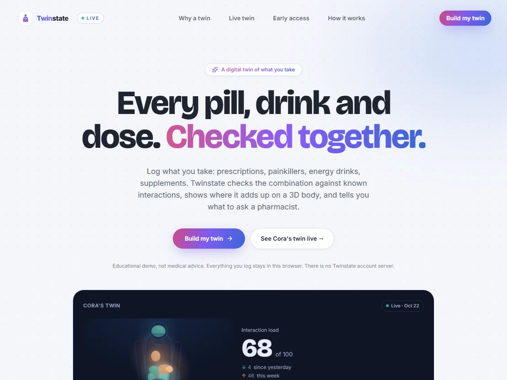

02 · THE PRODUCT
Prescriptions, painkillers, energy drinks, supplements and sleep, on one timeline.
Each entry is resolved to a real clinical concept, and the whole list is checked for interactions on the Ontomorph/HOLON platform.
Organ-level scores, a 0–100 interaction load, and the rule, records and NHS or FDA guidance behind each flag.

Landing page with the sample twin · demo data